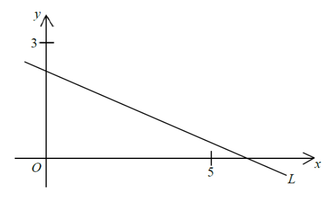

Topic: Coordinate Geometry · Equation of a straight line, intercepts
In the figure, the equation of the straight line $L$ is $ax+by+15=0$. Which of the following are true?
I. $\;a > b$
II. $\;a > -3$
III. $\;b > -5$

The line $L$ cuts the positive $x$-axis at a point beyond $5$, and the positive $y$-axis at a point above $3$.
For $ax+by+15=0$:
$x$-intercept: $\;y=0 \Rightarrow ax=-15 \Rightarrow x=-\dfrac{15}{a}>0$.
$y$-intercept: $\;x=0 \Rightarrow by=-15 \Rightarrow y=-\dfrac{15}{b}>0$.
$-\dfrac{15}{a}>0$ and $-\dfrac{15}{b}>0$.
Since $-15<0$, dividing by a negative product reverses the sign: both $a<0$ and $b<0$.
The $x$-intercept is larger than the $y$-intercept:
$-\dfrac{15}{a}>-\dfrac{15}{b}$.
Multiply both sides by $\dfrac{ab}{15}$ (positive since $a,b<0$):
$-b>-a \;\Rightarrow\; a>b$.
✓ Statement I is TRUE.
The $x$-intercept is larger than $5$:
$-\dfrac{15}{a}>5$.
Multiply both sides by $\dfrac{a}{5}$ (negative since $a<0$), reversing the inequality:
$-3<a \;\Rightarrow\; a>-3$.
✓ Statement II is TRUE.
The $y$-intercept is smaller than $3$:
$-\dfrac{15}{b}<3$.
Multiply both sides by $\dfrac{b}{3}$ (negative since $b<0$), reversing the inequality:
$-5>b \;\Rightarrow\; b<-5$.
This is the opposite of $b>-5$.
✗ Statement III is FALSE.
Only statements I and II are true.
Question. In the figure, the equation of the straight line \(L\) is \(ax+by+12=0\). The line cuts the positive \(x\)-axis at a point beyond \(6\), and the positive \(y\)-axis at a point below \(4\). Which of the following are true? I. \(a>b\) II. \(a>-2\) III. \(b>-3\)